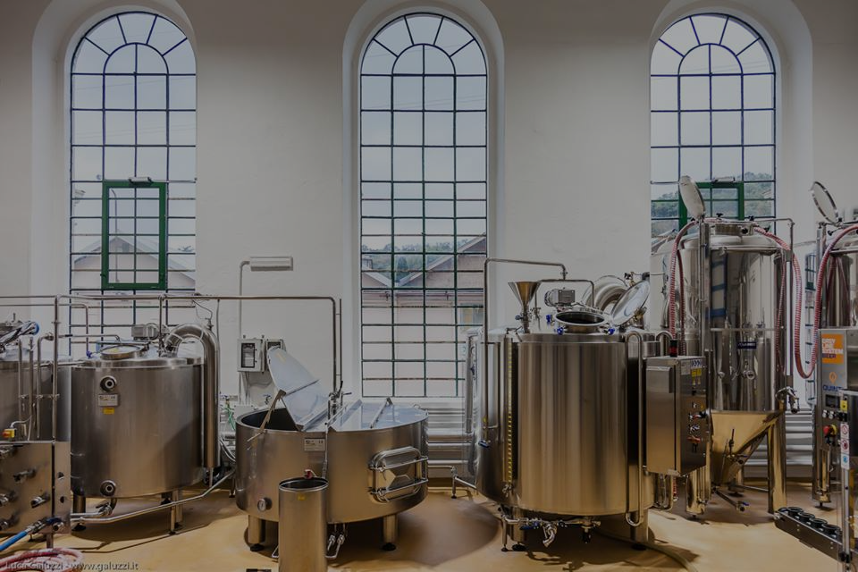

Front-End Birreria e’ un microbirrificio indipendente, dedicato alla 👨🔬 produzione di Birra Artigianale di Qualità, non pastorizzata nè filtrata e quindi ancora “viva” e fresca sia al momento dell’imbottigliamento che a quello del consumo.
Le caratteristiche delle nostre 🍻 Birre, tutte ad alta fermentazione, e la rifermentazione in bottiglia permettono una evoluzione ed un affinamento del gusto nonchè un periodo di conservazione non inferiore all’anno.
Cura e metodologia Artigianale di produzione, attenzione alla qualità, legame con il 🌱 territorio e con i movimenti di Cultura Birraria sono le idee alla base di Front-end Birreria.
Grande! Sei già alla fine. ✅
🙃 Okay, probabilmente se sei qui o vuoi comprare la mia azienda, o ti piace bere.
Non te ne sto mica facendo una colpa eh! Non c'è niente di meglio che una bella birra artigianale in compagnia di amici, e non sono io a dirlo, ma uno 🧪 studio scentifico.
In entrambi i casi io ti suggerirei di dare un'occhiata al 📑catalogo, allora, così da placare la tua necessità di bevanda al luppolo fermentato.